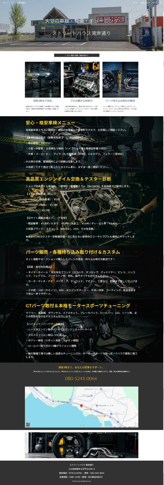

情報を整理する
サービス、料金、強み、流れ、FAQを、初めて見る方にも分かりやすく構成します。
DPRO WEBSITE SERVICE
ホームページは情報を置く場所だけではありません。検索から来たお客様がWEB予約・LINE相談・電話・地図へ進む入口です。ビジネス仕様ではLINE予約とWEB予約をDPROへ集約し、店舗側の管理につなげられます。
文章や画像を並べるだけではなく、初めて見るお客様が次の行動へ進み、店舗側も運用しやすい導線を作ります。
サービス、料金、強み、流れ、FAQを、初めて見る方にも分かりやすく構成します。
ホームページを予約・問い合わせの入口として活用し、必要な受付導線を設計します。
LINE相談・予約・会員導線など、店舗に合う入口を各ページから迷わず進めるようにします。
対象店舗では、LINE・WEBから入った受付をDPROで一元管理できる構成へ発展させます。
ビジネス仕様では、営業情報やお知らせなどをDPRO管理側から反映する構成も設計できます。
SSL、リンク、表示不具合などを確認する基本保守を用意しています。
価格差はページ数だけではありません。独立型か、LINE・DPROと一体運用するかまで含めて選べます。
初めてホームページを持つ店舗向け。Googleサイト等を使用して必要情報を整理。
一つの商品・サービスを縦長ページへ集中的にまとめるオリジナルLP。
高いデザイン品質を基準に、最大5ページ程度へ内容を絞った本格サイト。
LINE公式とDPROシステムの利用を前提とした、店舗運営連携型サイト。
※表示価格は税込です。ビジネスホームページ制作費はホームページ部分の料金です。LINE公式構築費、DPROシステム構築費、外部サービス費用は契約内容に応じて別途ご案内します。
実際に公開している制作実績に加え、同じ自動車整備店「STREET HOUSE湾岸通り」を題材にした4つの制作サンプルを縦に並べます。価格だけでなく、ホームページに何を任せるかの違いまで確認できます。
観葉植物レンタル・定期メンテナンスの実際の公開サイト。PC・スマホの見せ方、複数ページ、無料相談、LINE導線まで含めたDPRO制作実績です。
同じ自動車整備店を題材にして、33,000円のGoogle Sites版から、LP・オリジナルHP・LINE / WEB / DPRO連携型までを同じ条件で比較できます。

Google Sites版を見る ↗Google Sitesを使い、初めてホームページを持つ店舗向けに必要な情報を分かりやすくまとめる低価格プランです。実際の公開ページをご覧いただけます。
1ページにサービス・強み・料金・問い合わせ導線をまとめ、短時間で内容が伝わる構成。
動画・サービス案内・料金・店舗情報・FAQまで揃えた、本格的な店舗・企業ホームページ。
WEB受付・予約・写真相談をLINE公式とDPRO管理へつなげ、ホームページを店舗運営の入口にします。
※「グリーン・ポケット福岡粕屋店」は実際に公開している制作実績です。STREET HOUSE湾岸通りの4サイトは、同じ店舗を題材に制作プランを比較するためのサンプルです。33,000円プランはGoogle Sitesを使用した制作例です。いずれも契約店舗の導入実績を示す掲載ではありません。
ホームページは情報を届ける「出口」だけでなく、WEB予約や問い合わせを受ける「入口」にもなります。
友だち・リッチメニューから受付
検索・サービスページから受付
予約元を把握しながら、同じ予約・顧客管理へ集約
※WEB予約の受付方法・連携範囲は導入するDPROシステム／ホームページ構成により異なります。DPROシステムはLINE構築・運用契約店舗向け追加サービスです。
月額3,300円
公開・基本保守。更新作業や追加制作は内容に応じて別途案内します。
追加 月額1,100円
LINE運用契約店舗向けのホームページ公開・基本保守料金です。
追加 月額1,100円
LINE構築・運用契約店舗向け追加サービスです。初期構築33,000円（税込）。
LINE運用3,300円 + 対象店舗のHP基本保守1,100円 + DPRO利用1,100円 = 統合運用 月額5,500円（税込）。各初期制作・構築費は別途です。
検索、LINE相談、WEB予約など、ホームページに必要な役割を先に決めます。
サービス、料金、強み、流れ、FAQを優先順位に合わせて構成します。
店舗らしさと読みやすさを両立し、スマートフォンを含めて制作します。
必要に応じてLINE、WEB予約、DPRO、お客様画面などへの導線を接続します。
主要リンク、フォーム・予約導線、スマホ表示、SEO基本設定を確認します。
契約形態に合わせて公開・基本保守、必要な更新作業をご案内します。
各業種でDPROがどう使えるかはOFFICIALのシステム説明ページ、実際の操作は赤いPRODUCT SITEで確認できます。
はい。ホームページ単体での制作・基本保守にも対応しています。単体の基本保守は月額3,300円（税込）です。
可能です。DPRO連携を行う場合は、対象システム・サイト構成に合わせて受付方法と連携範囲を設計します。
LINE運用契約店舗向けの追加料金です。ホームページ単体の基本保守料金とは条件が異なります。
予算・ページ数だけで決めず、現在のLINE・予約方法・店舗運営まで確認して最適なプランを整理します。